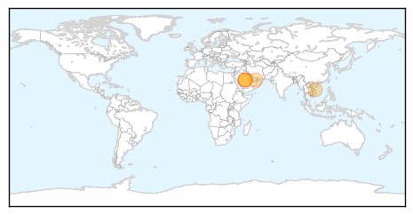
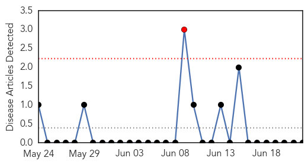

MERS
30-Day Web Trend
0 alerts, 0 warnings

30-Day Twitter Trend
0 alerts, 0 warnings

Article Locations
Article Confidences

Top Articles:
- 0.999
- Study Reveals How New Respiratory Virus Spreads
- 0.999
- WHO experts find hospital breaches worsened MERS outbreak in UAE
- 0.997
- Gulf Daily News Local News Flu vaccine orders doubled on new fear
- 0.992
- Vietnam to ask visitors from MERS-CoV area to fill health declaration
- 0.976
- WHO sounds caution for S Arabia pilgrimage
Top Tweets:
-
No tweets found for Jun 22, 2014
Mold/Fungal
30-Day Web Trend
1 alerts, 0 warnings

30-Day Twitter Trend
0 alerts, 0 warnings

Article Locations

Article Confidences

Top Articles:
-
No articles found for Jun 22, 2014
Top Tweets:
-
No tweets found for Jun 22, 2014